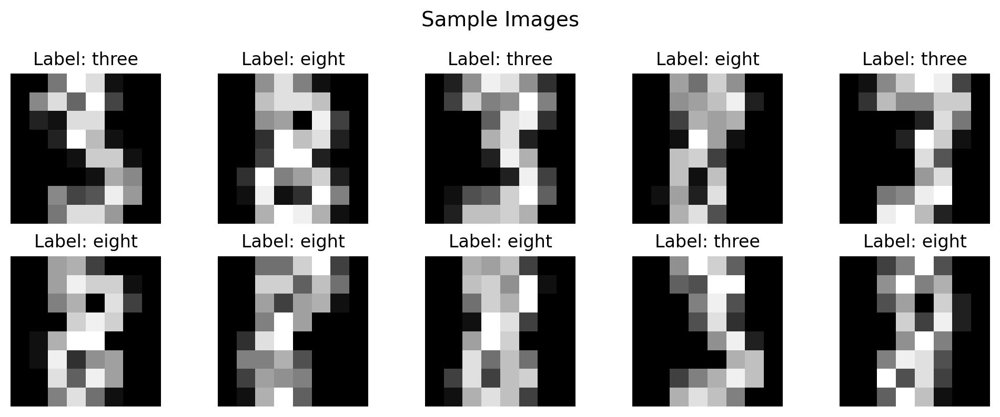
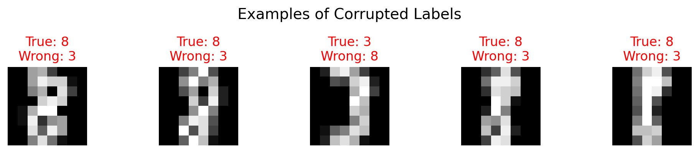
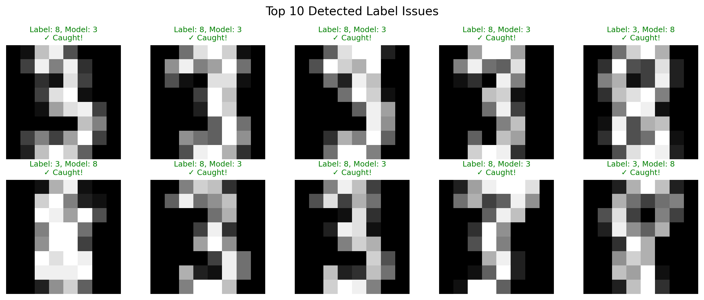
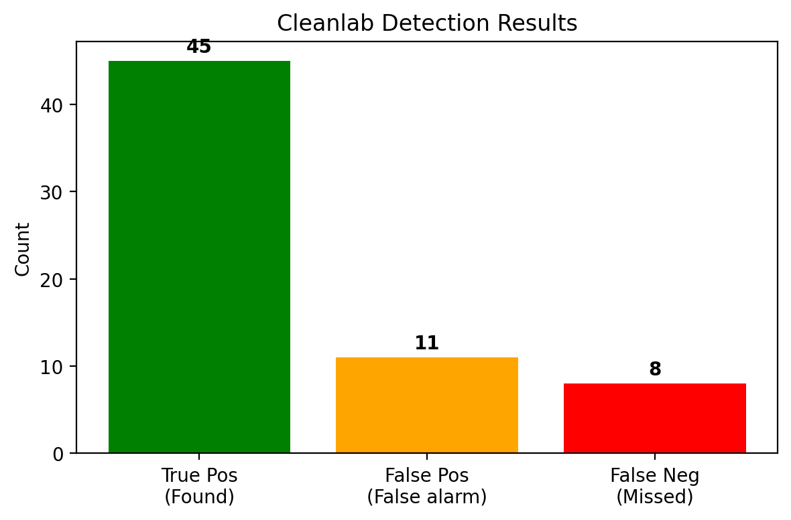

import numpy as np
import matplotlib.pyplot as plt
from sklearn.datasets import load_digits
from sklearn.linear_model import LogisticRegression
from sklearn.ensemble import RandomForestClassifier
from sklearn.model_selection import cross_val_predict
from cleanlab.filter import find_label_issues
np.random.seed(42)
%config InlineBackend.figure_format = 'retina'Detecting Label Errors with Cleanlab
This notebook demonstrates how to: 1. Load MNIST digits (3 vs 8 - binary classification) 2. Purposefully corrupt some labels 3. Use Cleanlab to detect the corrupted labels
Install: pip install cleanlab scikit-learn matplotlib
Step 1: Load MNIST Digits (3 vs 8)
# Load digits dataset
digits = load_digits()
# Filter to only 3s and 8s (binary classification)
mask = (digits.target == 3) | (digits.target == 8)
X = digits.images[mask]
y_true = (digits.target[mask] == 8).astype(int) # 0 = three, 1 = eight
print(f"Dataset: {len(X)} images")
print(f"Class 0 (three): {sum(y_true == 0)}")
print(f"Class 1 (eight): {sum(y_true == 1)}")Dataset: 357 images
Class 0 (three): 183
Class 1 (eight): 174# Show some examples
fig, axes = plt.subplots(2, 5, figsize=(10, 4))
for i, ax in enumerate(axes.flat):
ax.imshow(X[i], cmap='gray')
label = "eight" if y_true[i] == 1 else "three"
ax.set_title(f"Label: {label}")
ax.axis('off')
plt.suptitle("Sample Images", fontsize=14)
plt.tight_layout()
plt.show()
Step 2: Corrupt 15% of Labels
NOISE_RATE = 0.15
# Copy true labels and flip some
y_noisy = y_true.copy()
n_flip = int(len(y_noisy) * NOISE_RATE)
# Randomly pick indices to flip
flip_idx = set(np.random.choice(len(y_noisy), size=n_flip, replace=False))
for idx in flip_idx:
y_noisy[idx] = 1 - y_noisy[idx] # 0→1 or 1→0
print(f"Flipped {n_flip} labels ({NOISE_RATE:.0%} noise)")
print(f"First 10 corrupted indices: {sorted(list(flip_idx))[:10]}")Flipped 53 labels (15% noise)
First 10 corrupted indices: [np.int64(5), np.int64(9), np.int64(15), np.int64(22), np.int64(25), np.int64(30), np.int64(33), np.int64(39), np.int64(42), np.int64(45)]# Show some corrupted examples
flip_list = sorted(list(flip_idx))[:5]
fig, axes = plt.subplots(1, 5, figsize=(10, 2))
for i, idx in enumerate(flip_list):
axes[i].imshow(X[idx], cmap='gray')
true = "8" if y_true[idx] == 1 else "3"
wrong = "8" if y_noisy[idx] == 1 else "3"
axes[i].set_title(f"True: {true}\nWrong: {wrong}", color='red')
axes[i].axis('off')
plt.suptitle("Examples of Corrupted Labels", fontsize=14)
plt.tight_layout()
plt.show()
Step 3: Train Model & Get Predictions
# Flatten images for logistic regression
X_flat = X.reshape(len(X), -1)
# Train simple logistic regression
clf = RandomForestClassifier(n_estimators=100, random_state=42)
# Get cross-validated predictions (important: out-of-fold!)
pred_probs = cross_val_predict(clf, X_flat, y_noisy, cv=5, method='predict_proba')
print(f"Predictions shape: {pred_probs.shape}")
print(f"\nExample predictions:")
print(f" Image 0: P(three)={pred_probs[0,0]:.2f}, P(eight)={pred_probs[0,1]:.2f}")Predictions shape: (357, 2)
Example predictions:
Image 0: P(three)=0.70, P(eight)=0.30Step 4: Find Label Issues with Cleanlab
# Find label issues
issue_idx = find_label_issues(y_noisy, pred_probs, return_indices_ranked_by='self_confidence')
print(f"Cleanlab found {len(issue_idx)} potential label errors")
print(f"We actually corrupted {n_flip} labels")Cleanlab found 56 potential label errors
We actually corrupted 53 labels# Show top detected issues
fig, axes = plt.subplots(2, 5, figsize=(12, 5))
for i, idx in enumerate(issue_idx[:10]):
ax = axes.flat[i]
ax.imshow(X[idx], cmap='gray')
given = "8" if y_noisy[idx] == 1 else "3"
pred = "8" if pred_probs[idx, 1] > 0.5 else "3"
conf = max(pred_probs[idx])
actually_wrong = idx in flip_idx
color = 'green' if actually_wrong else 'orange'
ax.set_title(f"Label: {given}, Model: {pred}\n{'✓ Caught!' if actually_wrong else '✗ False alarm'}",
fontsize=9, color=color)
ax.axis('off')
plt.suptitle("Top 10 Detected Label Issues", fontsize=14)
plt.tight_layout()
plt.show()
Step 5: Evaluate Detection Performance
detected = set(issue_idx)
true_pos = len(detected & flip_idx)
false_pos = len(detected - flip_idx)
false_neg = len(flip_idx - detected)
precision = true_pos / len(detected) if detected else 0
recall = true_pos / len(flip_idx) if flip_idx else 0
print("Cleanlab Performance")
print("=" * 35)
print(f"True Positives: {true_pos:3d} (found real errors)")
print(f"False Positives: {false_pos:3d} (false alarms)")
print(f"False Negatives: {false_neg:3d} (missed errors)")
print(f"\nPrecision: {precision:.1%}")
print(f"Recall: {recall:.1%}")Cleanlab Performance
===================================
True Positives: 45 (found real errors)
False Positives: 11 (false alarms)
False Negatives: 8 (missed errors)
Precision: 80.4%
Recall: 84.9%# Visualize results
fig, ax = plt.subplots(figsize=(6, 4))
bars = ['True Pos\n(Found)', 'False Pos\n(False alarm)', 'False Neg\n(Missed)']
vals = [true_pos, false_pos, false_neg]
colors = ['green', 'orange', 'red']
ax.bar(bars, vals, color=colors)
ax.set_ylabel('Count')
ax.set_title('Cleanlab Detection Results')
for i, v in enumerate(vals):
ax.text(i, v + 1, str(v), ha='center', fontweight='bold')
plt.tight_layout()
plt.show()
Summary
What we learned: 1. We corrupted 15% of MNIST labels (3↔︎8 swaps) 2. Cleanlab detected most of the corrupted labels 3. Some false positives = images that genuinely look ambiguous
Key insight: Model confident + label disagrees → likely label error!